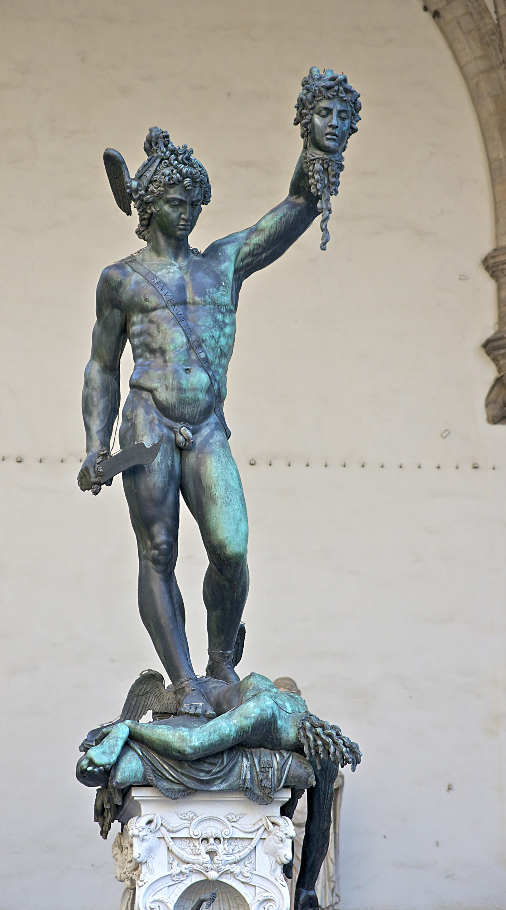
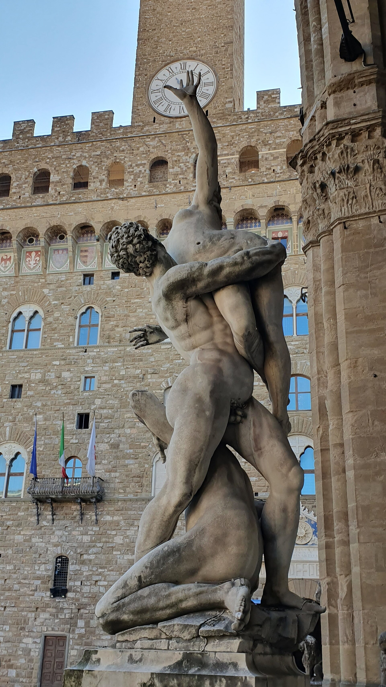

自 13 世纪以来佛罗伦萨的政治心脏：旧宫（市政厅）门前，兰齐敞廊与广场上的雕塑群构成一座免费的露天博物馆--大卫复制品、珀尔修斯、强夺萨宾妇女……从共和国议事到萨伏那洛拉的火刑，这座广场见证了佛罗伦萨全部的高光与至暗。
看点路线
Il Percorso
- 1旧宫门口：大卫复制品与《大力神》并立
- 2兰齐敞廊：切利尼《珀尔修斯》+ 詹博洛尼亚《强夺萨宾妇女》
- 3海神喷泉与科西莫一世骑马像
- 4广场地面：找萨伏那洛拉火刑点的圆形铜牌
- 5旧宫内部：500 人大厅（达芬奇与米开朗基罗未完成之战）
广场雕塑
La Piazza · 6 件露天展品

《珀尔修斯》
青铜的珀尔修斯提着美杜莎的头颅，姿态优雅得像在跳舞。切利尼在自传里吹嘘的铸铜灾难与自救，一半是真的；底座上他自刻的小像得意地看着观众。这是托斯卡纳大公的政治寓言：斩首美杜莎=镇压共和派。

《强夺萨宾妇女》
一块大理石雕出三个人物、一条上升的螺旋线--欧洲第一件“为 360° 观看而设计”的雕塑。绕行一周，每一面都是新构图：挣扎、托举、旋转。原题本叫“被劫的萨宾”，灵感来自古罗马建城抢亲传说。
大卫（复制品）
原作在此站了 369 年（1504-1873），1910 年复制品归位。看这个位置的选择：大卫怒目望向罗马方向，恰好也是美第奇家族从南方回来的方向--1504 年的佛罗伦萨共和派，把政治立场立成了 5 米高。
海神喷泉
海神立于战车之上，佛罗伦萨人却嫌他“白肉一堆大理石”，给他起了外号"il Biancone"（大白块）。这件“失败作品”如今是广场构图的重要锚点--艺术史的幽默：甲方看不上，后世当地标。
科西莫一世骑马像
美第奇大公科西莫一世的青铜骑像，趾高气扬地望着整座他征服过的城市。1587 年铸成时，共和国已是两代人的记忆--雕塑是权力的书签，插在广场的政治书页上。
旧宫与 500 人大厅
94 米高的阿诺尔福塔是佛罗伦萨天际线的定针。内部 500 人大厅是达芬奇《安吉亚里之战》与米开朗基罗《卡辛那之战》“双雄对决”的现场--两幅都没完成，大厅后来被瓦萨里重装。考古界至今在争论：瓦萨里的新壁画后面，是否还藏着达芬奇的底稿。
历史故事
Le Storie
壹火刑点：广场地面的铜牌
广场地面（海神喷泉前）嵌着一块圆形铜牌，标着"Qui arse Girolamo Savonarola"--1498 年 5 月 23 日，修士萨伏那洛拉在这里被烧死。他在这里烧过别人的“虚荣之火”，九年后自己成了灰。
萨伏那洛拉推翻了美第奇的统治，把佛罗伦萨变成神权共和国，也把波提切利推向了自我怀疑（见乌菲兹的故事）。物价飞涨与教皇的绝罚令让市民倒戈--同一个广场，昨天为他欢呼，今天看他受刑。
铜牌附近的地砖被无数脚步磨得发亮。找它、踩一踩，是佛罗伦萨历史爱好者的暗号：权力在广场上从不可靠，艺术的黄金时代恰恰生长在这种不可靠的缝隙里。
贰切利尼的熔炉之夜
《珀尔修斯》的铸造是切利尼自传里最惊险的章节：他在自家后院砌炉熔铜，浇铸当天炉温异常，他发着高烧指挥工人，屋顶起火、暴雨将至，他下令烧光全部家具与厨具保住炉温--"我让仆人把家里的碗柜、桌子全扔进炉膛"。
铜液最终流动完美，但事后检查发现珀尔修斯右脚三根脚趾没铸全。切利尼拒绝重铸，直接补凿了事--今天的修复痕迹仍可辨认。这种“艺术家式傲慢”成就了自传史上最好看的章节，也留下了一尊“带伤的完美”。
切利尼写自传时已年老，读者普遍认为他吹了牛。但 20 世纪修复珀尔修斯时发现内部结构与他的描述一致--这位金匠的牛皮，经得起 X 光。
参观贴士
Consigli Pratici
- 广场免费 24h，清晨人少光线好；夜间灯光下雕塑群氛围更佳
- 兰齐敞廊免费进入，遮阳避雨皆宜，雕塑近在咫尺
- 旧宫值得登塔（需联票），塔顶是老城制高点之一（穹顶与塔楼二选一可省体力）
- 广场咖啡（如 Riccardo）坐外摆=“广场门票”，价格含景观费，心理预期先调好
- 旺季扒手与“免费手绳”骗局高发，摆手不接话即可
顺路同游
Da Non Perdere